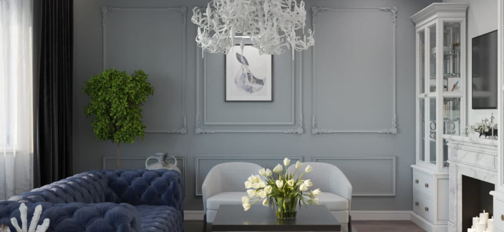
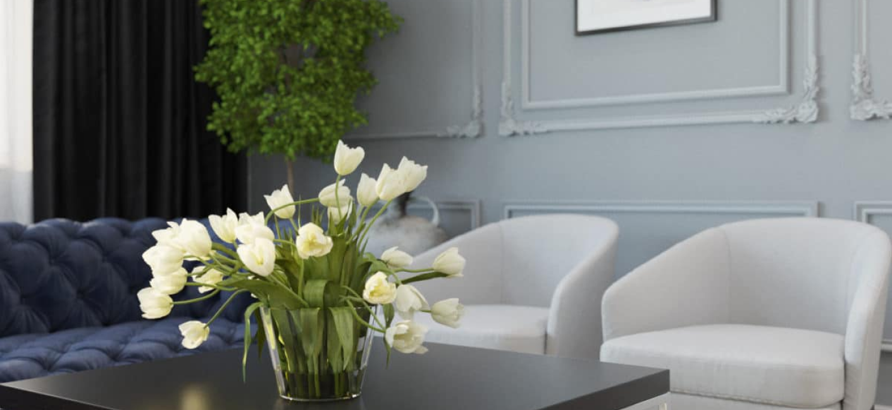
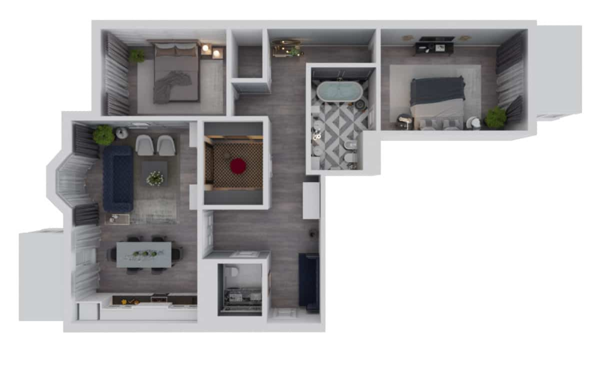

Квартира в серых тонах, которая безумно
понравилась нашей редакции
Площадь
115 м2
Санузлы
2
Потолки
3,1 м
Кухня
12 м2
Комнаты
3
Этаж
2
Эта квартира свободной планировки в новостройке спроектирована для супружеской пары с устоявшимся вкусом и любовью к спокойной современной классике.
При работе с этим пространством мы постарались решить все поставленные задачи. Во-первых, разместить мебель так, чтобы больше было свободного места.
Во-вторых, все используемые предметы интерьера в этом проекте несут функциональную или эстетическую нагрузку. И здесь нет ничего лишнего.
Выбранный заказчиком стиль можно назвать «спокойной современной классикой». Обилие излишне выразительных декоративных элементов — сложная лепнина, барельефы, колонны и тому подобное — заказчик не приветствует. Цветовая гамма — спокойная, естественная, преимущественно светлая. Материалы отделки — любые в разумных ценовых сегментах.
 Прачечная в соответствии с пожеланием заказчика может располагаться либо непосредственно в зоне дополнительного санузла, либо примыкать к нему, либо в отдельном помещении.
Большая часть мест хранения — в идеале все — размещается вне основных помещений. Соответственно, необходимо предусмотреть гардеробную комнату или большое количество встроенных шкафов в зоне холлов и коридоров.
В квартире должны быть две
полноценные спальни: одна
основная, для хозяев, вторая
может выполнять функции
второй хозяйской или
гостевой.
Основная ванная: большая
ванна, выделенная душевая,
раковина, унитаз, биде.
Дополнительный санузел:
раковина, унитаз, по
возможности и душ.
В первую очередь заказчики проекта просили соединить пространство гостиной и кухни-столовой. В гостиной должна разместиться мягкая мебель, телевизор, возможно, книжные шкафы, бар и несколько витрин.
Кухня-столовая должна включать в себя зону приготовления пищи и обеденную зону, рассчитанную на 4–6 человек. Желательно было предусмотреть возможность организации застолья на 10–12 человек.
В третьих, нужно было создать ощущение лёгкости и воздуха. Поэтому мы выбрали монохромную цветовую гамму. Белый всегда зрительно раздвигает границы, расширяет пространство, наполняя его воздухом и светом. Благородный серый добавляет элегантности. Интерьер выдержан в светлых тонах с контрастными и фактурными акцентами, что создаёт в квартире тёплую атмосферу и придаёт обстановке особое благородство.
